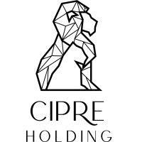
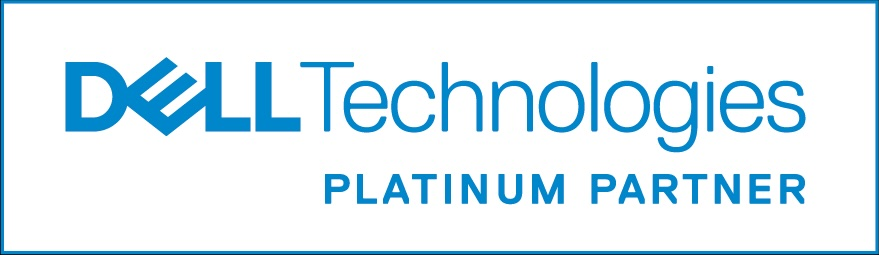
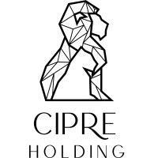
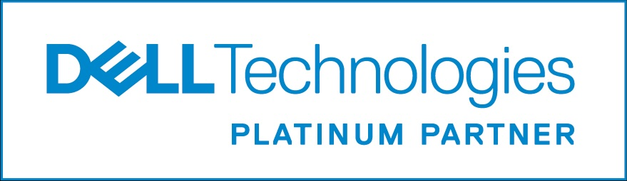
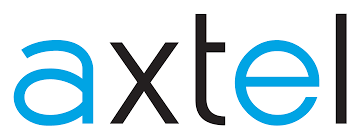
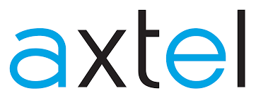

Expo: México IA+ La Inversión Acelerada
El evento que se llevó a cabo los días 12 y 13 de noviembre en la Expo Santa Fe, fue la oportunidad perfecta para que nosotros, como estudiantes, pudiéramos conocer proyectos actuales desarrollados por empresas e identificar posibles áreas en las que prepararnos para trabajar en el futuro. Por otro lado, para los profesionales y gente de negocios, el evento sirvió para encontrar buenas inversiones y evaluar si entraban para cerrar tratos.
De esta manera fue como se vivió la bienvenida de forma general:
El día inició con la presentación de los ponentes, quienes tocaron temas importantes en su respectivo espacio. Para conocer más sobre lo que dijeron o qué temas tocaron visita:

Empresas Participantes
Las empresas multinacionales y nacionales que participaron fueron cruciales para el desarrollo de este evento, pues presentaron proyectos los cuales tienen como objetivo beneficiar a la sociedad. NVIDIA y CIPRE HOLDING (las empresas anfitrionas) fueron las principales parteaguas para hacer esto posible. De igual forma para conocer sus proyectos da clic en el de tu interés.
 



 

Asimismo otras empresas como Doctor & Health, demostraron que usan la inteligencia artificial para detectar de una forma más precisa enfermedades, en este caso nos comentaron que estaban con la detección de tumores, lo hacen entrenando modelos de IA con datos e imágenes de tumores. Es importante mencionar que no dejan la responsabilidad totalmente en la IA, ya que es fundamental la colaboración con médicos especializados, pues ellos son los que tienen los conocimientos y experiencia para validar los resultados y solo usan la inteligencia artificial como una herramienta muy poderosa que ayuda a encontrar patrones que a veces son difíciles de reconocer a simple vista. Gracias a esto, se pueden detectar enfermedades en etapas más tempranas y ofrecer un mejor pronóstico para los pacientes. Por lo que de esta manera se demuestra el uso de la IA en diferentes áreas.
Sector Gubernamental
Los proyectos presentados por este sector no decepcionaron, pues se mostró el nivel de equipo con el que cuenta la Guardia Nacional, la Marina y la Fuerza Aérea Mexicana para hacer sus labores y sobretodo, cómo ellos han integrado la IA para mejorar tareas de búsqueda y rescate.
Experiencia
Asistir a este evento fue una experiencia única, ya que pudimos conocer a las empresas que están cambiando el mundo con inteligencia artificial, además también tuvimos la oportunidad de escuchar conferencias de personas con mucha experiencia en negocios y tecnología como Calista Redmond vicepresidenta de NVIDIA para iniciativas de IA o al conocido empresario Arturo Elías Ayub, que nos motivan e inspiran a emprender en este campo, pues es seguro que la IA está transformando todo y si no la sabes usar te quedas atrás.
En los stands que había en el evento podíamos interactuar de diferentes formas, hacer dinámicas y también nos daban algunos presentes. Algunas cosas que obtuvimos fueron:
Bolsas de diferentes compañías: La de Doctor & Health nos las dieron al pedir informes, sin embargo, para obtener la de Alestra un chico nos hizo preguntas relacionadas a nuestra carrera.
Termo: nos lo dieron al participar en la dinámica de los lentes de realidad virtual de Dell.
Taza y libreta: las obtuvimos al seguir las páginas que nos indicaron.
Cinta para gafete: la conseguimos en el stand de Lenovo.
Power bank Lenovo: este dispositivo es lo más útil que obtuvimos, pues es una batería portátil con varias entradas y lo ganamos en una rifa que hicieron, en la cual metían nuestros nombres en una ruleta, al tercer lugar le dieron un termo, al segundo lugar la batería portátil y al primero una mochila.
Otra dinámica interesante fue que podíamos obtener un avatar de nosotros generado con IA, básicamente te tomaban una foto y la IA se encargaba de crearlo lo más parecido posible.
¿Qué es lo que hay que esperar?
Mucho se habla sobre que las personas van a ser reemplazadas por la IA. Como enseñanza y aprendizaje de estos dos días de conferencia, es claro que no falta mucho para un cambio, pero ¿no se supone que por eso y más hemos pasado muchas veces?, entonces ¿cuál es la diferencia? Como especie humana hemos sido fieles testigos de cómo si no te adaptas al cambio, es obvio que ya perdiste. Sin embargo, si logras adaptarte, ganas la experiencia de que el cambio no es necesariamente malo, pues respecto a la IA, lo malo sería depender de ella de manera cognitiva, así que seguramente en el futuro surgirán nuevos puestos de trabajo, ya que el objetivo es reacondicionar la oferta laboral y claro, también lograr que al usar la IA lo hagamos de tal forma que no nos afecte nuestro pensamiento crítico y de resolución de problemas, ya que esa es la tarea humana que debemos reservarnos para decirle a la IA lo que debe hacer.
Oportunidades
Para nosotros como estudiantes de inteligencia artificial, acudir a este evento fue muy enriquecedor, pues además de todas las conferencias y dinámicas, nos rodeamos de nuestras futuras oportunidades laborales, preguntamos en varias empresas sobre posibles prácticas profesionales, y nos comentaron que tenían programas de becarios e incluso cursos que nos podrían ayudar mucho, pues ellos sí buscan perfiles relacionados con la IA, que puedan brindar soluciones, con la parte de programación, análisis de datos, entrenamiento de modelos, incluso para robótica. La mayoría dijo que debíamos revisar sus páginas de internet, ya que por ese medio subían la información y requisitos para aplicar.
Gracias a las conferencias e interacciones con las empresas nos dimos cuenta de que, si habrá mucha demanda de ingenieros en IA, lo cual nos motiva a seguir aprendiendo y a prepararnos mejor para aprovechar todas las oportunidades que vienen.